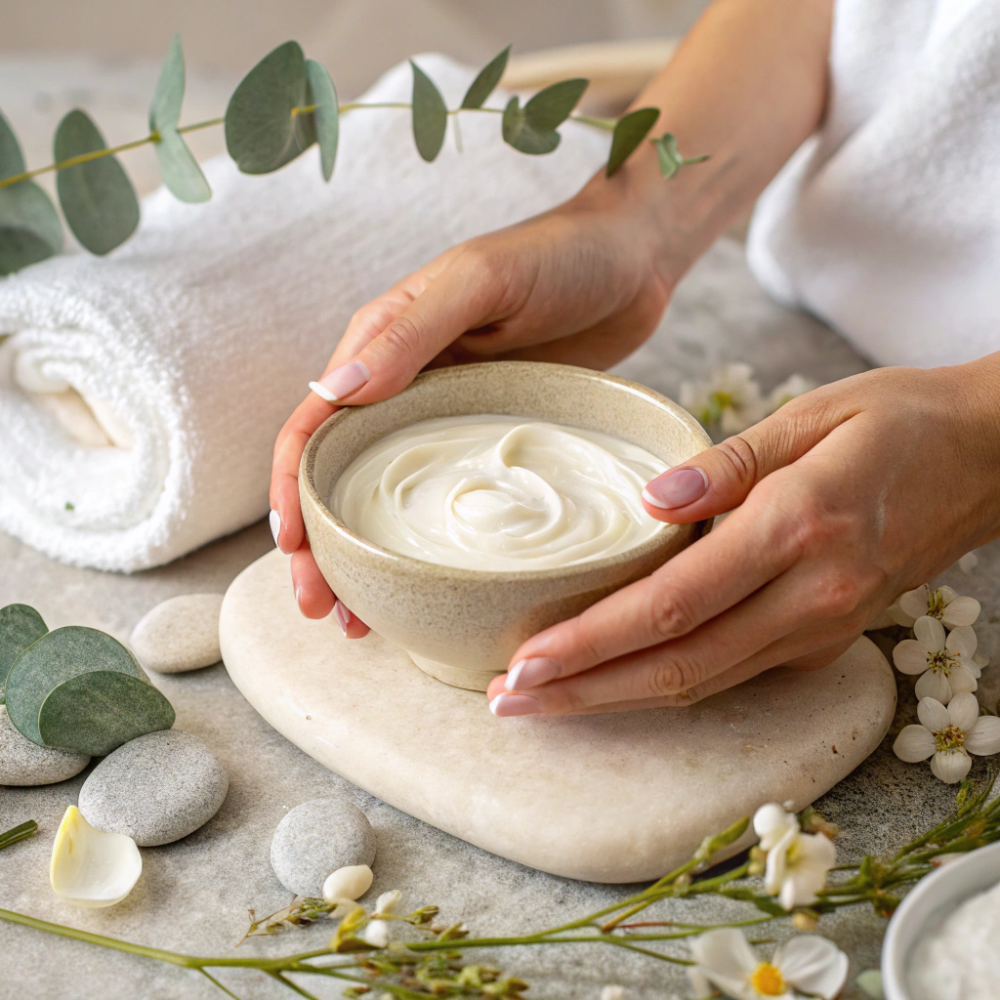
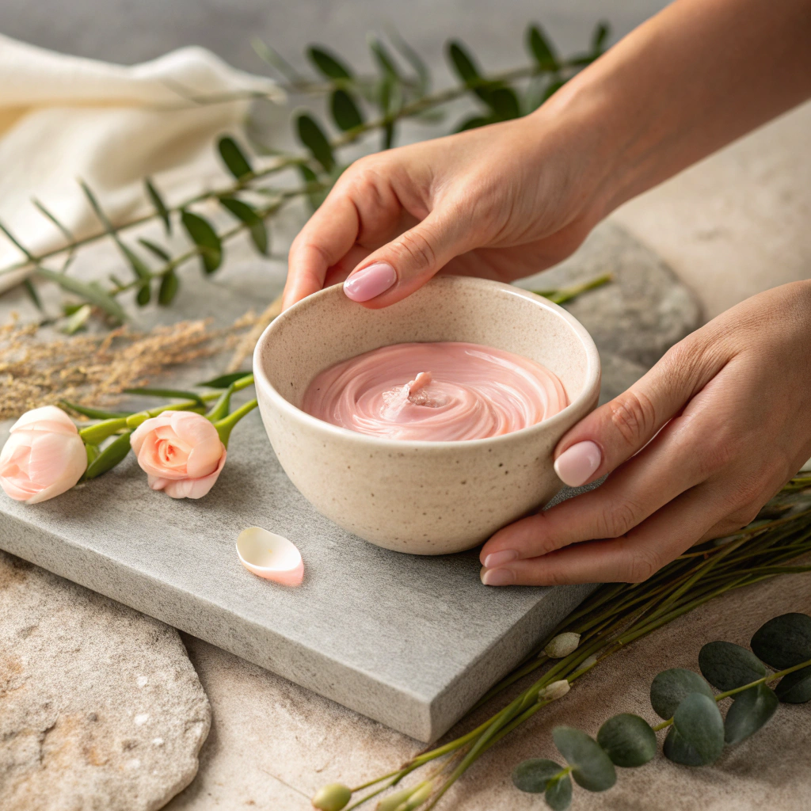
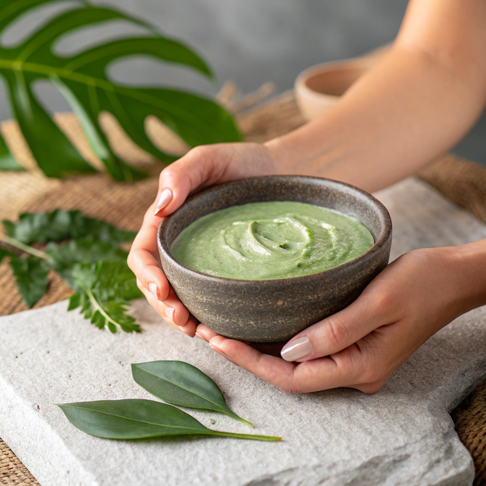
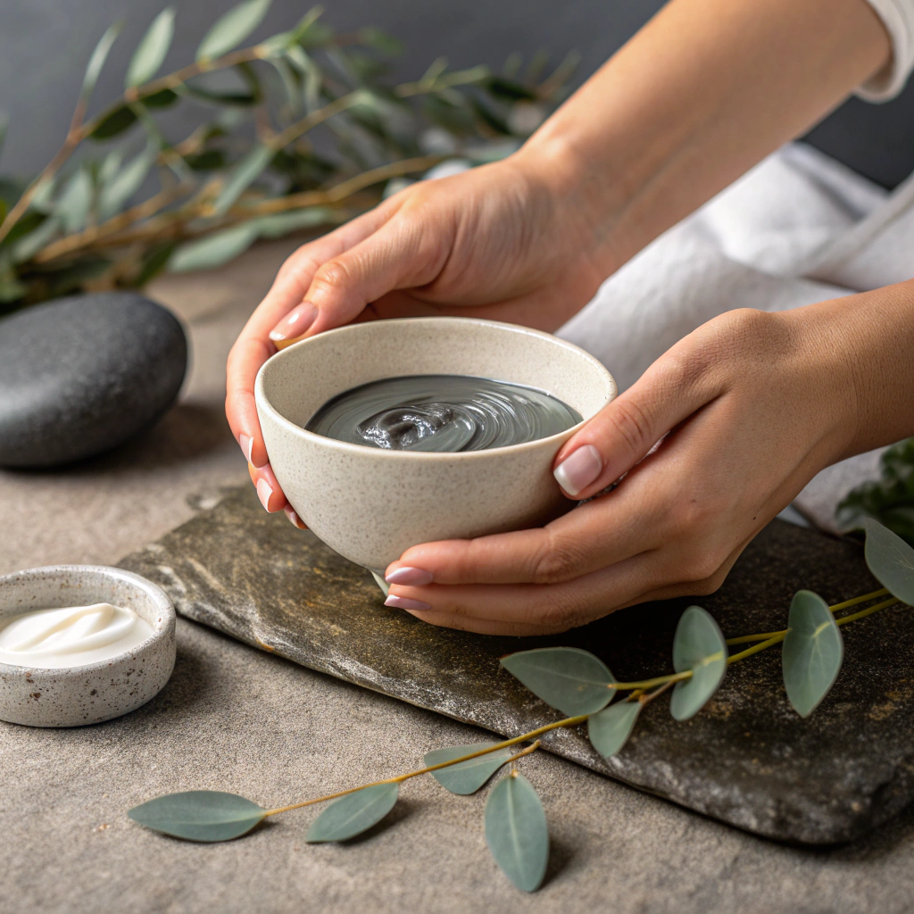

Arındırma Önerileri
Temizle, hafifle, yenilen.
Cilt tipine göre değişen arınma ihtiyaçları için hazırlanmış,evde uygulanabilir ve cildi dengeleyen öneriler.
Cildinle uyumlan. Sana ait olan ritüeli seç.
Kuru Cilt
 DokunArınma Önerileri
- Bal & Zeytinyağı Maskesi
1 tatlı kaşığı bal + birkaç damla zeytinyağını karıştır.
Temiz cildine sür, 10 dakika boyunca nefesine odaklan. - Durulama Ritüeli
Ilık suyla nazikçe arın.
Havluyla bastırma, cildin kendi kendine kurusun. - Niyet
“Cildim güvende, nemi kabul ediyorum.”
Yağlı Cilt
 DokunArınma Önerileri
- Yoğurt & Kil Maskesi
1 yemek kaşığı yoğurt + yarım çay kaşığı kil.
T bölgesine odaklan, 8–10 dakika bekle. - Arınma Anı
Maskeyi yıkarken acele etme.
Yağla birlikte gerginliği de bırak. - Niyet
“Cildim dengede, fazlaya ihtiyacım yok.”
Hassas Cilt
 DokunArınma Önerileri
- Yulaf & Papatya Maskesi
1 tatlı kaşığı yulaf unu + papatya çayı.
Karışım macun kıvamında olsun. - Bekleme Süresi
5–7 dakika yeterli.
Gözlerini kapat, omuzlarını gevşet. - Niyet
“Nazik olmak da güçlü olmaktır.”
Karma Cilt
 DokunArınma Önerileri
- Bal & Yoğurt Maskesi
1 tatlı kaşığı bal + 1 tatlı kaşığı yoğurt.
Yanaklara biraz daha bol uygula. - Uygulama Ritmi
Cildinin farklı bölgelerine saygı duy.
Her yere aynı davranmak zorunda değilsin. - Niyet
“Denge, kontrol değil uyumdur.”
Normal Cilt
 Dokun
Dokun
Arınma Önerileri
- Aloe & Gül Suyu Maskesi
Aloe jel + birkaç damla gül suyu.
Cildine ince bir tabaka halinde uygula. - Bakım Anı
Bu bir düzeltme değil, teşekkür ritüeli.
10 dakika boyunca dokunma. - Niyet
“İyi olanı korumayı seçiyorum.”